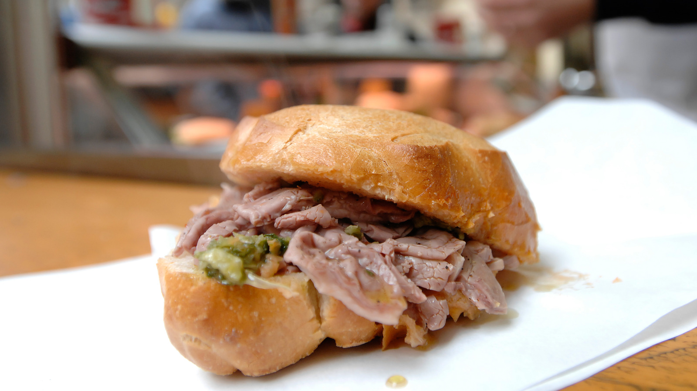

Florence is known for many of its street food dishes, but lampredotto might just be the most enviable. Their famous "chioschi" or street food stands, line the streets and dish out lampredotto, a traditional sandwich filled with an interesting cut of beef, says Visit Florence. Specifically, lampredotto is the "fourth and final stomach of a cow," according to the site, which is typically slow-cooked, sandwiched between crunchy bread, and paired with an array of vegetables and hot sauce.
For the lampredotto:
For the salsa verde:
Prepare a broth by roughly chopping the vegetables and adding them to the water in a large pot with a generous amount of salt and the peppercorns. Bring to the boil and allow to simmer for about 30 minutes. Add the lampredotto, whole, and cook until soft, covered with a lid. The cooking time is really a case of checking and testing, it may take about one hour. Make sure the lampredotto is always submerged under the broth, you can add more water as necessary. Keep the lampredotto warm, in the broth until you are ready to use it.
Chop the anchovies, onion, garlic, capers and herbs together finely (with a knife or a food processor) and add olive oil and lemon juice to bind it into a paste-like consistency. This is the part where you then taste, see and decide what else needs to be added or adjusted. It should be, as it’s name suggests, very green, so you can add plenty of parsley, which is the sauce’s main ingredient. Season with salt and pepper. Artusi, as usual, is quite vague with his measurements and inevitably, the recipe for salsa verde changes from household to household. My mother in law, for example, adds fine breadcrumbs to thicken and bind it slightly, some like to add hard-boiled egg to the mix, while personally I like to leave out the garlic and put in an extra bit of anchovy.
Part of the joy of eating street food is watching the performance of it being prepared right in front of you. The lampredottai will take out a huge piece of lampredotto from one of his steaming pots, and on a chopping board, will roughly slice and chop enough to generously heap onto the panino. The bread rolls are normally, split open in half and a bit of the bread in the middle is taken out to have more space for the filling. A heaped spoonful of salsa verde usually goes on top of the lampredotto (though this is to the customer’s taste) and it is seasoned with extra salt and pepper. At the request of the customer, the lampredottaio will dip the top half of the roll in the broth to soak up some juicy goodness (required, if you ask me) and the ready panino di lampredotto is handed over in a paper napkin.
Absolutely delicious.